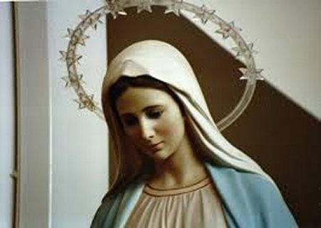
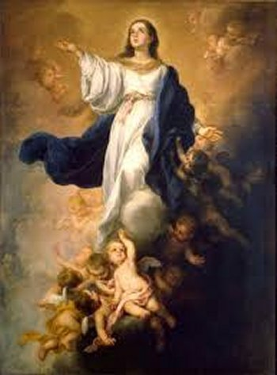
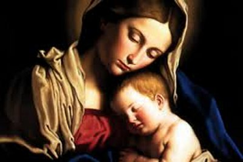

MÃE DE
MISERICÓRDIA
MÃE DE DEUS
Para nossa alegria e consolação,
MARIA, NOSSA SENHORA é uma preciosa Rainha, repleta de carinho, cheia de
doçura
e de clemência, sempre desejosa de nos favorecer, induzindo todos nós a
praticarmos o bem. É na verdade, uma Rainha inclinada só à piedade e ao perdão
dos pecadores. Por isso mesmo, a Igreja quer que dediquemos uma atenção muito
especial a SANTÍSSIMA VIRGEM MARIA e respeitosamente a chamemos:
“RAINHA DE MISERICÓRDIA”.
No Prefácio deste Site
mencionamos que o Reino de DEUS está fundamentado na Justiça e na Misericórdia.
O Reinado da Justiça ELE reservou para SI Mesmo, e o Reinado da Misericórdia cedeu
a MARIA, Sua MÃE SANTÍSSIMA. E também, muito importante para toda a humanidade,
é esclarecer que o SENHOR ordenou que pelas Mãos de MARIA e através DELA,
passassem todas as graças e misericórdias, que seriam dispensadas à todos os
seus filhos.
NOSSA SENHORA revelou a Santa
Brígida: “EU sou a RAINHA
DO CÉU e MÃE DE MISERICÓRDIA; para os justos sou alegria e para os pecadores sou
a Porta por onde entram para DEUS. Não há no mundo pecador tão perdido, que não
participe de Minha Misericórdia; pois, por minha intercessão, todos são menos
tentados do que haviam de ser. Exceções somente para aqueles que de todo já estivessem
repudiados por DEUS (pela irrevogável sentença
contra os réprobos). Mas de um
modo geral, nenhum dos pecadores é tão abandonado por DEUS, a ponto de não conseguir
se reconciliar com ELE, e também, de conseguir a misericórdia Divina, através da
Minha Intercessão. MÃE DE MISERICÓRDIA ME chama todos. Em verdade, a Misericórdia
de DEUS para com a humanidade ME fez também profundamente Misericordiosa para
com os pecadores. Portanto, infeliz na outra vida será aquele que podendo nesta
vida recorrer a MIM, tão compassiva que sou com todos, não ME invoca e se perde
eternamente!” E a MÃE DE DEUS acrescentou:
“EU sou MÃE não só dos
justos e inocentes, mas também sou a MÃE dos pecadores que decidem rigorosamente
a se converter.”
Esta realidade é um fato tão
concreto e tão divulgado, que a maioria dos cristãos que amam MARIA, já conhece
e sabe que a SANTÍSSIMA VIRGEM deixa evidente, que ELA ajuda a todos aqueles
que desejam se tornar seus filhos. E como natural consequência, é conhecida e
denominada pela Igreja:
“MÃE DOS AFLITOS” e “REFÚGIO DOS PECADORES”.
Por isso mesmo, por uma questão lógica, quem aspira ser filho desta
maravilhosa e admirável MÃE, é necessário que busque o caminho da conversão,
que decididamente deixe o pecado e enfrente com dignidade e perseverança as
tentações diabólicas do cotidiano. Assim, já no caminho da conversão, sem
dúvida, serão todos aceitos por NOSSA SENHORA, que os estimulará, e que lhes
dará mais forças e disposição, para lutar contra as terríveis maquinações do
maligno e dos seus asseclas.
AS ORAÇÕES DE SÚPLICA
O grande São Tomás de Aquino
ensinava que a oração do pecador embora não tendo merecimento direto,
contudo pela sua persistência e fervor, está apta a alcançar a graça do perdão
Divino. Isto porque, suas orações geram esta força fundamentada na bondade
Divina e nas promessas de NOSSO SENHOR JESUS CRISTO, que disse:
“Pois todo o que pede recebe”.
(Lc 11,10)
As mesmas considerações devem
ser feitas ao se referir as preces dirigidas à MARIA, NOSSA SENHORA. Se aqueles
que oram são os pecadores que buscam ser ouvidos, os merecimentos da própria
VIRGEM MARIA, a quem eles (os pecadores) se encomendam, alcançarão merecimento
diante de DEUS, se existir no pecador, conforme já mencionamos, aquela
disposição honesta e sincera de corrigir a sua existência pecaminosa. NOSSA MÃE
SANTÍSSIMA não olha para a quantidade e nem para o terrível valor dos pecados
cometidos, mas para a sincera intenção com que o pecador ou a pecadora se
apresenta arrependida das ofensas praticadas e busca a conversão do coração. A
SANTÍSSIMA VIRGEM MARIA é MÃE DE MISERICÓRDIA não só de nome, mas de fato, e em
verdade se mostra assim, pela ternura e o imenso amor com que socorre aqueles
que buscam a Sua Divina Bondade, o Conselho e o Perdão.
É fato conhecido que a MÃE DE
DEUS além de auxiliar o pecador no caminho da conversão, carinhosamente
direciona o seu espírito para os Sacramentos, conduzindo-o inicialmente ao
Sacramento do Perdão Divino, ou seja, o Sacramento da Sagrada Confissão.
NOSSA VIDA
 A Igreja também nos ordena
que chamemos MARIA, NOSSA SENHORA, de “MARIA nossa vida”. Isto porque,
pela criação temos um Corpo e uma Alma. O Corpo nasce pela união dos nossos pais,
e a Alma vem de DEUS. A Alma é que dá vida ao Corpo. Todavia é a "Graça de DEUS que dá vida em plenitude a Alma”.
Uma Alma sem a Graça Divina só tem o nome de
que está viva, porque na realidade está morta, ela apenas existe. MARIA ao
obter por Sua intercessão junto a DEUS a Graça aos pecadores, está na realidade
concedendo-lhes a “Vida”.
Porque está infundindo “as Graças Divinas”
em cada Alma, dando-lhe a vida e impulsionando-a para o Sacramento do Perdão. Como está
no Livro dos Provérbios: “Quem me
encontra, encontra a Vida, e goza do favor de DEUS” “Honrai a SANTÍSSIMA
VIRGEM MARIA e achareis a Vida juntamente com a Eterna Salvação”.
A Igreja também nos ordena
que chamemos MARIA, NOSSA SENHORA, de “MARIA nossa vida”. Isto porque,
pela criação temos um Corpo e uma Alma. O Corpo nasce pela união dos nossos pais,
e a Alma vem de DEUS. A Alma é que dá vida ao Corpo. Todavia é a "Graça de DEUS que dá vida em plenitude a Alma”.
Uma Alma sem a Graça Divina só tem o nome de
que está viva, porque na realidade está morta, ela apenas existe. MARIA ao
obter por Sua intercessão junto a DEUS a Graça aos pecadores, está na realidade
concedendo-lhes a “Vida”.
Porque está infundindo “as Graças Divinas”
em cada Alma, dando-lhe a vida e impulsionando-a para o Sacramento do Perdão. Como está
no Livro dos Provérbios: “Quem me
encontra, encontra a Vida, e goza do favor de DEUS” “Honrai a SANTÍSSIMA
VIRGEM MARIA e achareis a Vida juntamente com a Eterna Salvação”.
NOSSA SENHORA verdadeiramente foi
colocada por DEUS no mundo para participar ativamente do Plano Divino de Redenção
da Humanidade de todas as gerações, e neste contexto, ELA apresenta todasas Suas
especiais Virtudes: como perfeito modelo de mulher na vida, na família, e como auxiliar
admirável e eficaz na Obra Redentora do Seu Divino FILHO JESUS. MARIA, MÃE dos cristãos,
Rainha de misericordiosa, repleta de ternura e de bondade para todos os seus filhos,
ELA é a preciosa e querida MÃE, a Medianeira carinhosa de impressionante
eficiência que sempre busca implantar a Paz entre DEUS e todos os pecadores.
Santo Afonso Maria de Ligório
escreveu: “Como é verdade
e hoje eu tenho a certeza, quantas e quantas Graças DEUS nos dispensa, todas
passam pelas mãos de MARIA, e por isso mesmo, é também verdade que só por meio
da SANTÍSSIMA VIRGEM poderemos esperar e conseguir a sublime Graça da perseverança.
Esta Graça ELA promete a todos que fielmente A servem nesta vida”.
MÃE COMPETENTE
Por outro lado, NOSSA SENHORA é
maravilhosamente preocupada com todos nós, não abandona os seus devotos em
nenhuma circunstância, nos sofrimentos, nas angústias e especialmente na hora da
morte. Por isso mesmo, a Santa Igreja nos manda rogar a SANTÍSSIMA VIRGEM MARIA:
“Rogai por nós pecadores,
agora e na hora da nossa morte. Amém.”
O Profeta Isaias descreve, que
quando uma alma está prestes a sair desta vida, acontece um grande
alvoroço no inferno, os demônios disputam a primazia de assumir a terrível
função de tentá-la antes da morte, de conseguir influenciá-la no pensamento
daquele corpo agonizante, nos seus gestos e na sua disposição, no sentido de
depois acusar a alma no Tribunal de DEUS. Todavia, quando se trata de uma alma
que tem devoção a MARIA, os demônios andam pela periferia, fazem cara feia, mas
não se atrevem a se aproximarem, e nem de acusá-la no Tribunal Divino.
E quando a alma é de um cristão
que demonstrou ao longo da sua existência, uma grande preocupação em servir e
amar NOSSA SENHORA, ELA não só socorre os seus amados servidores na hora da
morte, mas também vai esperá-los na passagem para a eternidade, a fim de
saudá-los e acompanhá-los até o Tribunal Divino. E esta verdade está de acordo
com o que a mesma SANTÍSSIMA VIRGEM disse a Santa Brígida, referindo-se aos seus
devotos moribundos: “Na hora
da morte dos meus servos EU venho como SENHORA e MÃE amantíssima de cada um
deles, e lhes trago consolo e alívio.”
NA ATUALIDADE
Os hereges modernos não
suportam ver como os católicos têm um carinho todo especial por NOSSA SENHORA
e a chama:
“MARIA nossa Esperança”. Eles argumentam que só DEUS é nossa esperança e que
o SENHOR Mesmo, amaldiçoa quem confia nas pessoas: “Maldito o homem que se fia no homem...” (Jr 17,5) Na verdade, o Profeta Jeremias com estas palavras, estava se referindo
as pessoas que põem sua confiança
“unicamente” nos homens. Tal é
o procedimento dos pecadores interesseiros que, em troca da amizade, de vantagens e dos
préstimos de alguém, não se incomodam até de ofender a DEUS, através de impropérios e ações
indignas. Entretanto, são agradáveis e abençoados pelo SENHOR, todos aqueles que esperam em MARIA,
tão poderosa como MÃE DE DEUS, para LHE suplicar as Graças e a Vida Eterna. Por isso mesmo,
DEUS quer ver honrada AQUELA excelsa Criatura, que neste mundo Amou e Honrou o SENHOR
muito mais do que todos os Anjos e que toda a humanidade junta. Por isso, é com
muita razão que chamamos à
“VIRGEM MARIA de esperança nossa”.
O Abade Celes não perdia
uma oportunidade para explicar:
“Quem ama MARIA acha todo o bem, acha todas as graças e todas as virtudes,
porque ELA, por SUA intercessão, alcança de DEUS tudo quanto é necessário ao seu
devoto, para enriquecê-lo com a Divina Graça”.
No Livro dos
Provérbios encontramos as frases que identificam a nossa MÃE SANTÍSSIMA:
“Comigo estão às riquezas...” “...
para dispensá-las aos que me amam...” (Pr 8, 18.21) Louvada e bendita seja, pois, a imensa bondade de nosso
DEUS, que nos concedeu esta excelsa e maravilhosa MÃE e ADVOGADA, tão terna e tão
amorosa, que nos ajuda a trilhar com segurança os dias da nossa existência.
O PAPA SÃO
GREGÓRIO MAGNO NOS DESCREVE UM FATO:
Uma virgem chamada
Musa se distinguia por sua grande devoção a NOSSA SENHORA. Todavia, achando-se em
perigo de perder a sua virgindade, por causa dos maus exemplos das suas companheiras,
de tanto implorar o auxílio de nossa MÃE SANTÍSSIMA, MARIA lhe apareceu e lhe
disse: “Musa, não queres
entrar para o coro destas virgens?” Era um coro muito bonito e alegre, de jovens que acompanhavam a MÃE DE DEUS.
Musa disse que sim e ouviu a seguinte resposta da RAINHA DO CÉU: “Pois bem, então deixa as tuas companheiras e prepara-te,
porque dentro de trinta dias estarás entre as Santas Virgens do Céu”. E de fato assim aconteceu: Musa deixou as suas
amigas e trinta dias depois adoeceu, estava para morrer, vitima de gravíssima enfermidade.
Outra vez lhe apareceu a VIRGEM MARIA chamando-a pelo seu nome, ao que Musa prontamente
respondeu: “Sim, ó minha querida
RAINHA, já vou.” Com essas
palavras expirou na paz do SENHOR.
NOSSO REFÚGIO
Um dos títulos bem
apropriado, com que a Santa Igreja saúda NOSSA SENHORA, e que muito anima os pobres
pecadores, é aquele rezado na Ladainha: “Refúgio dos Pecadores”.
Descreve a história,
que antigamente havia na Judéia, as chamadas cidades de refúgio, nas quais os
culpados podiam se abrigar e ficavam a salvo das penas merecidas. Agora, no
mundo só existe verdadeiramente uma cidade de refúgio, que é MARIA SANTÍSSIMA,
da qual no Livro dos Salmos está mencionado com o natural destaque:
“... coisas gloriosas se têm dito de TI,
ó cidade de DEUS”. (Sl 86,3) Há
que acrescentar, que nas antigas cidades de refúgio que existia na Judéia, não havia
asilo para todos os culpados e nem para todos os tipos de delitos, enquanto que sob o
manto de MARIA se acham refúgio todos os pecadores e todas as espécies de delitos. Basta
que o pecador ou pecadora recorra a ELA, com um sincero desejo de conversão, para conseguir
a sua salvação. Se posteriormente, por uma fraqueza chegar a recair no pecado, nossa
MÃE SANTÍSSIMA que vê a intenção do coração saberá distinguir e conhecer se
existe ou não um sincero arrependimento.
Santa Brígida escreveu
nas suas revelações: “MARIA é o
astro precursor do SOL” (que é DEUS).
Isto quer dizer: quando em uma alma pecadora desponta a devoção a MARIA, é sinal certo de
que ali em pouco tempo, DEUS virá enriquecê-la com sua graça.
MÃE BONDOSA
E MISERICORDIOSA

Um homem da
sociedade que às vezes se lembrava de JESUS e de NOSSA SENHORA, não tinha uma fé
sólida e consistente, rezava mais para a VIRGEM MARIA acompanhando o pessoal de
casa. Certa vez teve um sonho que se revelou de plena autenticidade. Ele se viu
em pleno julgamento, perante o Tribunal de JESUS CRISTO. De um lado o demônio
o acusava firme, apontando os seus inúmeros defeitos e pecados que estavam
relacionados numa longa lista, os quais foram colocados na balança da Divina
Justiça e pesaram muito mais que todas as suas boas ações praticadas ao longo da
sua existência. Todavia, a sua advogada era NOSSA SENHORA, e o que ELA fez para
protegê-lo? Estendeu a SUA compassiva MÃO, e colocando-a sobre a balança, fez
com que o cursor de medição inclinasse a favor do seu devoto. E assim lhe fez
entender que ELA, por suas imensas virtudes lhe alcançava o perdão Divino, se
ele se convertesse mudando de vida. Logo que acordou, ainda muito assustado e
agradecido, aceitou o bom conselho da MÃE SANTÍSSIMA recebido naquele sonho,
mudando totalmente os seus hábitos e se converteu.
São Boaventura
falava sobre a SANTÍSSIMA VIRGEM MARIA: “Os que DELA se aproximam com devoção e reverentemente, ELA os ama, nutre-os,
os aceita por filhos, e protege sua vida”. Analisando as palavras nessa realidade, ficamos entendendo com clareza quem
é exatamente aquela mulher do Apocalipse (12,14), a Quem foi dada duas grandes asas
de águia para voar ao deserto. Muitos Santos afirmam que aquelas “asas de águia” significam “a presteza” com
que MARIA, NOSSA SENHORA, vencendo a velocidade dos Serafins, se desloca com a
maior rapidez para sempre socorrer
os seus filhos.
A MÃE DE DEUS tanto
SE interessa pelo nosso bem, que até SE antecipa as nossas súplicas. Em muitos casos,
Sua misericórdia é mais pronta em nos socorrer, do que nós mesmos, somos pressurosos
e preocupados em invocá-la. A causa disto está no seu mui carinhoso e compassivo
coração. Apenas sabe da nossa miséria, logo derrama torrencialmente a sua
misericórdia, revelando que é impossível a tão benigna RAINHA ver a necessidade
de uma alma, sem ir incontinenti ao seu auxílio.
ORAÇÃO
“Ó MÃE DE DEUS,
RAINHA DOS ANJOS, ESPERANÇA DA HUMANIDADE, escutai a quem VOS chama e a VÓS
recorre. Prostrado hoje aos VOSSOS Pés, consagro-me para sempre a VÓS na
qualidade de servo, e me obrigo a VOS servir e honrar quanto posso durante o
resto da minha vida. Bem o sei que a homenagem de um escravo tão vil e rebelde
como eu, que tanto tenho ofendido a JESUS, VOSSO FILHO e meu REDENTOR, não tem o
valor de uma homenagem de um fiel digno. Mas, se apesar de minha indignidade, me
recebeis como servo e me tornais digno da VOSSA intercessão, num ato mesmo de
misericórdia, VÓS granjeará a honra que um miserável como eu não VOS poderia
dar”.
“Aceitai-me,
pois, RAINHA DO CÉU E DA TERRA, e não me rejeitais, ó minha QUERIDA MÃE. Para
buscar as ovelhas perdidas é que o VERBO ETERNO desceu do Céu e Redimiu a
humanidade. E a SENHORA seria capaz de repelir uma ovelhinha que a VÓS recorre
para encontrar JESUS, o SEU tão AMADO e tão QUERIDO FILHO? VIRGEM Bendita, VÓS
podeis salvar a quem quereis. Por isso, eu VOS peço, ó SOBERANA do Universo,
salvai-me, tende compaixão de mim, não relembre os meus muitos pecados, a VOS
entrego neste instante, toda a minha vida suplicando amorosamente o VOSSO
carinho materno, e ajoelhado aos VOSSOS Pés, suplico: salvai a minha alma”.
(Oração escrita
por Santo Afonso Maria de Ligório, que está publicada no livro: “Glórias de MARIA”,
impresso na Editora Santuário).

 PRÓXIMA PÁGINA
PRÓXIMA PÁGINA
PÁGINA ANTERIOR
RETORNA AO ÍNDICE